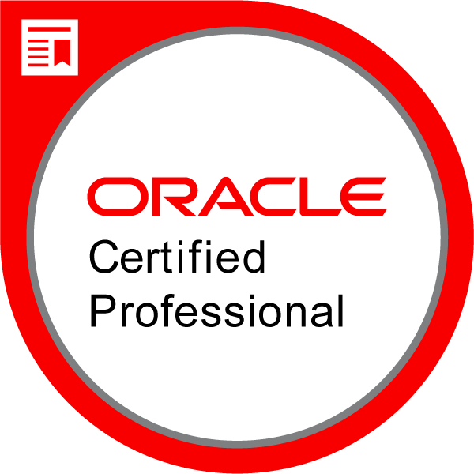
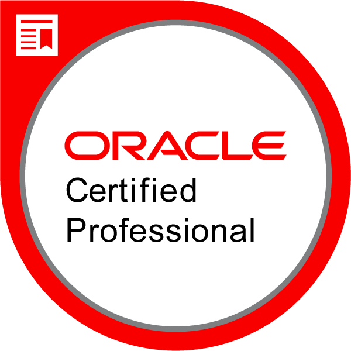

Gerald Nwogbo Okeke
PROFILE SUMMARY
An experienced DevOps Engineer with a demonstrated history of working on AWS.
Expertise in automation, CI/CD implementation, and Server Administration.
I have a passion for solving problems using technology. I design software systems
and manage databases. Recognized in my 12 years of working experience for implementing
impactful projects with a variety of skills and a can-do spirit I can effectively multitask,
deliver set goals, and maneuver difficult situations to achieve the desired result
TECHNICAL SKILLS
DevOps
-
Proficient in: AWS, Automation, Building CI/CD Pipelines, Perfomance Testing
with Selenium, Github, Docker, Cloudformation, Bash, Prometheus
-
Moderate in: Serverless, Postman, Python, Javascript, NodeJs, Documentation
Software & other technologies
-
Database: RDS, MongoDB, DynamoDB, SQL Server, MySQL, Oracle, PostgresSql
-
Platform: Windows, Linux, Docker
-
Tools: Terraform, Ansible, Git, Kubernetes, Circle Ci, Travic Ci, Github Action, Jenkins, VS Code, Visual Studio, Eclipse
WORK EXPERIENCES
Software Engineer (DevOps) at Nigerian Nuclear Regulatory Authority
November 2013 - Date
Job Description
- Responsible for developing Infrastructure as Code with cloud formation or terraform for deploying highly available websites and applications on AWS
- Use Docker Containers and Circle CI or Travis CI to implement CI/CD to slash release time and improve deployment
- Manage EKS, and also set up local Kubernetes clusters to run a local test in other to get high-quality artefact.
- Manage AWS Accounts – IAM, including the setup and configuration of EC2 Instances, RDS Databases, VPCs, Multi-Zone Subnets, Elastic Load Balancers, Cloudfront Distributions, Route 53 Hosted Zones & Health Checks monitoring.
- Automate unit tests, implementation tests in the CI pipeline, and performance tests with Selenium after deployment
- Monitor endpoints with AWS X-Ray, Grafana and Prometheus. Integrate logging to emails for faster incident response time
- Responsible for designing applications using .Net technologies and SQL
Software Developer and Database Administrator (DevOps) at Fintrak Software Solutions
January 2012 - November 2013
Job Description
The Fintrak Software is a .Net application that acts as a third-party system for financial institutions in Nigeria.
The system is plugged into the core banking database to extract data, then run computations and pass adjustments to
trial balance to generate new reports that are IFRS compliant. Implementing these projects involves
- Migration of Data using Oracle/Mssql script from Core Banking Application to a Fintrak Data warehouse
- Designing Microsoft SSIS Package with Microsoft Business Intelligence Studio to handshake with core banking application for data extraction
- Using ASP.Net application to Calculate the Amortized cost of Financial Assets Held to Maturity using the Effective Interest Rate, calculation of Fairvalue of Financial Assets Held for Trading and Financial Assets Available for Sale, and Calculate Impairments on Loans and other Financial Instruments
- Posting of Adjustments to Statement of Accounting Standard( SAS) Trialbalance to Convert to IFRS Trialbalance using SQL stored procedures and functions
-
Using Microsoft reporting services and Crystal reporting services to generate IFRS Basic reports:-
- Statement of Financial Position;
- Statement of Comprehensive Income;
- Statement of Changes in Equity;
- Statement of Cashflow;
- Notes to Accounts;
- Financial Disclosures e.g Maturity Risk Deposit, Related Party Information, Property Plants and Equipments(PPE), etc. for IFRS Reporting
- Testing and auditing the system to confirm the final reports are error-free as well as other functional testing to test performance and reliability
- Automating Scheduled database backup
EDUCATION
-
Certifications
- Cloud Developer by Udacity (ALX-T) - March 2023
- Cloud DevOps Engineer by Udacity (ALX-T)- August 2023
-
Nile University of Nigeria
- M.Sc: Computer Science - July 2017 - June 2019
- GPA: Second Class Honors Upper Division
-
Federal University of Technology Owerri (FUTO)
- B.Tech Information Management Technology - October 2004 - June 2010
- GPA: Second Class Honors Upper Division
-
NIIT Abuja, Nigeria
- Certificate in Server and Database Administration: Sunsolaris & Oracle - 2008 - 2011
- Oracle Certified Associate (OCA)
- Oracle Certified Professional (OCP)
- Information Technology Infrastructural Library (ITIL)
OTHER